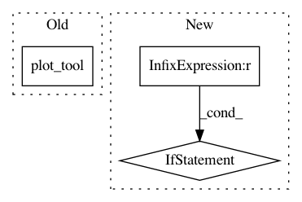

9e89e0a6576c8ae04ce97c296fe8fd9dc5ee419f,scanpy/tools/dpt.py,,plot,#Any#Any#Any#Any#Any#Any#Any#Any#Any#Any#,126
Before Change
component_name = "DC"
ddpt["writekey"] += "_diffmap"
plott.plot_tool(ddpt, adata,
smp=["pseudotimes", "segments", None],
component_name=component_name,
legendloc=legendloc)
def plot_segments_pseudotimes(ddpt, cmap):
Helper function for plot.
After Change
ddpt["writekey"] += "_diffmap"
smp = ["pseudotimes", "segments"]
if len(adata.smp_keys()) > 0:
smp += [None]
adata.smp["pseudotimes"] = ddpt["pseudotimes"]
adata.smp["segments"] = ddpt["groups"]
adata["segments_names"] = ddpt["groups_names"]
adata["segments_ids"] = ddpt["groups_ids"]
In pattern: SUPERPATTERN
Frequency: 3
Non-data size: 3
Instances
Project Name: theislab/scanpy
Commit Name: 9e89e0a6576c8ae04ce97c296fe8fd9dc5ee419f
Time: 2017-02-13
Author: f.alex.wolf@gmx.de
File Name: scanpy/tools/dpt.py
Class Name:
Method Name: plot
Project Name: theislab/scanpy
Commit Name: 37014059366b55d8293dc38898769d28410e3926
Time: 2017-03-05
Author: f.alex.wolf@gmx.de
File Name: scanpy/tools/dpt.py
Class Name:
Method Name: plot_dpt
Project Name: theislab/scanpy
Commit Name: 37014059366b55d8293dc38898769d28410e3926
Time: 2017-03-05
Author: f.alex.wolf@gmx.de
File Name: scanpy/tools/dbscan.py
Class Name:
Method Name: plot_dbscan